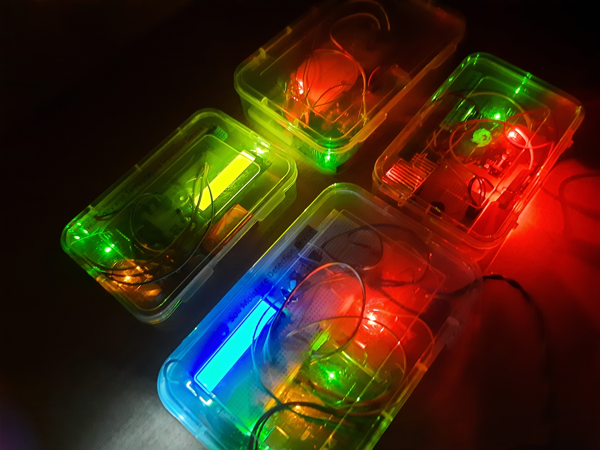

Arduino-based Embedded Systems Projects by Surat Bhushan
Developed multiple Arduino-based embedded systems integrating sensors, actuators, and automation for real-world problem-solving in healthcare, agriculture, renewable energy, and robotics. Each project demonstrates strong hardware-software integration, system design thinking, and a focus on practical human-centric applications.
SmartMediBot- Automatic Pill Dispense
Built in: 2025 (B.Tech. first year)
Designed and implemented a smart medication dispensing system using Arduino for automated, time-based pill delivery. The setup integrates a servo motor for precision-controlled pill release, an LCD interface showing live time and alerts, and audio-visual indicators (buzzer + LED) to notify users. It helps ensure medication adherence and reduces errors—especially useful for elderly and chronic patients. Serial monitoring was used for feedback and debugging, enhancing system reliability
Code Repository

BlueRover- Bluetooth-Controlled Exploration Vehicle
Built in: 2021 (9th Grade)
Built a Bluetooth-controlled robotic vehicle capable of navigating remote or hazardous terrains via smartphone control. The system can be enhanced with sensors, cameras, GPS, and mapping modules for tasks like surveillance, cave rescue, or landslide assessment. The modular design allows transition from manual to autonomous operation, enabling data collection (images, environment mapping) from human-inaccessible zones.

PowerStride- Energy Generating Smart Shoes
Built in: 2023 (11th Grade)
Developed energy-harvesting footwear using piezoelectric sensors to convert walking energy into storable power within a rechargeable Li-ion battery. Integrated an ultrasonic obstacle detection system for visually impaired users, triggering a buzzer alert upon detecting nearby obstructions. The project demonstrates sustainable energy innovation and assistive technology integration in a compact wearable form.

AgroSense- Integrated Smart Farming Device Suite
Built in: 2022 (10th Grade)
Engineered a multi-functional agricultural monitoring and automation system combining four sensor-based subsystems:
- Smart Irrigation Unit- Moisture sensor controlling motorized irrigation automatically.
- Fire & Gas Alert Module- Flame and gas sensors with buzzer/LED alarms for crop protection.
- Environmental Monitor- Displays real-time humidity and temperature data on an LCD screen.
- Rain & Water Management Unit- Controls automatic sheds and tracks water levels during rainfall.
This suite enhances farm safety, water management, and environmental awareness, supporting sustainable smart agriculture.
